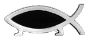
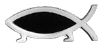

Charles Darwin may not have started the evolution revolution, and he certainly did not end it, but he was the main cornerstone that many other theories rested upon. Charles Darwin, extremist extraordinaire, simply surprised England when he released his first book, On the Origin of Species by Means of Natural Selection, or the Preservation of Favored Races in the Struggle for Life, in 1859. He angered and amazed them when his second book came out, The Descent of Man in 1871. It was easy to read, if not accept, about the evolution of other creatures; but to say that the human race, supreme over all other animals had evolved from apes, was too much for 18th century England. Darwin was accused of heresy all his life, but more so after this book. |